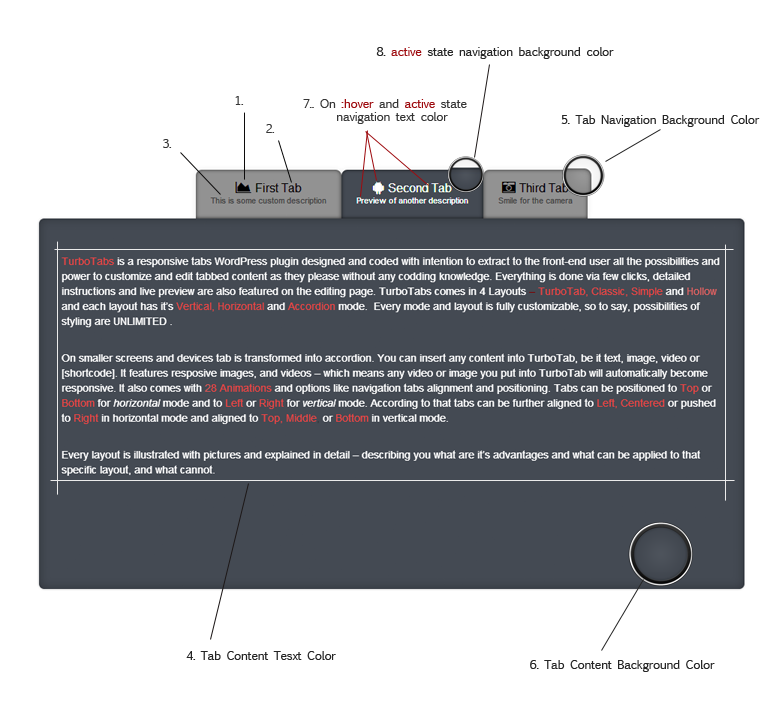
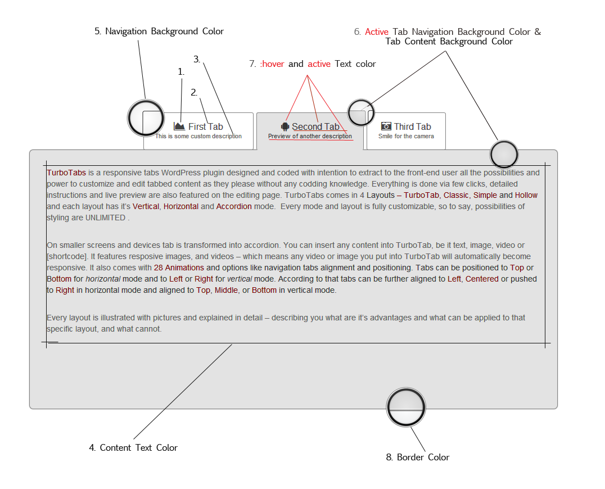
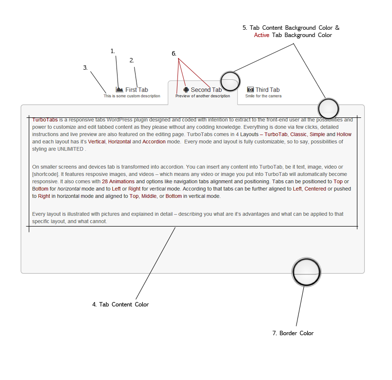
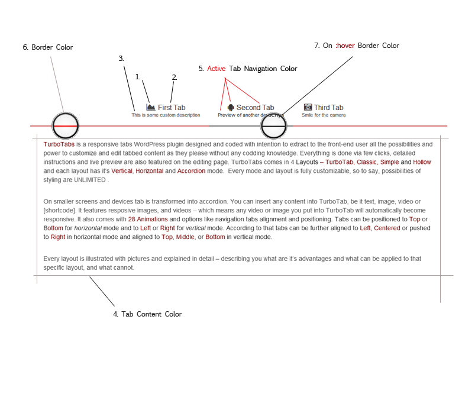

Thank you for purchasing my plugin. If you have any questions that are beyond the scope of this help file, visit my support forum. Thanks so much!
There are 4 layouts that makes the core of the TurboTabs:
Each of these layouts have it's own basic appearance. Look at it as an foundation on which you can build whatever you like. To make them more unique and to stand out every layout has it's own set of available options. Some layout like Simple and Classic have some similarities but are still different in the limitations of some options. Yet, some options can work differently for one style than to another. every instance is documented in in-content help (which you can receive by hovering with your mouse over the red question mark next to the option).
You can style everything except border color of the tab - because this layout is not designed to support borders. Everything else is fully customizable.
Illustration:
This layout is designed to have some kind of "classic" look. Navigation tab border radius is set to 0 - meaning there is no border radius (tab navigation corners are sharp), and tab content background color is applied also to the active navigation.
Illustration:
This layout is similar to classic one. Difference is has small border radius at the corners of tab navigation and tab navigation background color is transparent - they are not colored except for the active one which, same as in classic layout) inherit it's color from tab content background color.
Illustration:
This layout pretty much stand out from all previous ones. Main difference between hallow layout and other layouts is that it doesn't has standard design. On contrary it is made to have "hollow" appearance - meaning that there are no content background and tab navigation background colors. No :hover colors, or active either. Instead you can use Border Color and active state border color to change it's look. Border color will apply to border line beneath, above, left, or right (depending from mode you use) of the navigation tabs. Active tab Border Color will apply to the border beneath that specific (active) tab. This will override the main border color creating underline effect.
Illustration:
